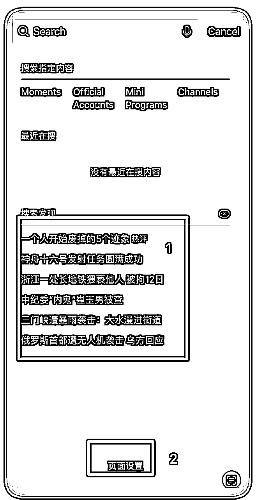
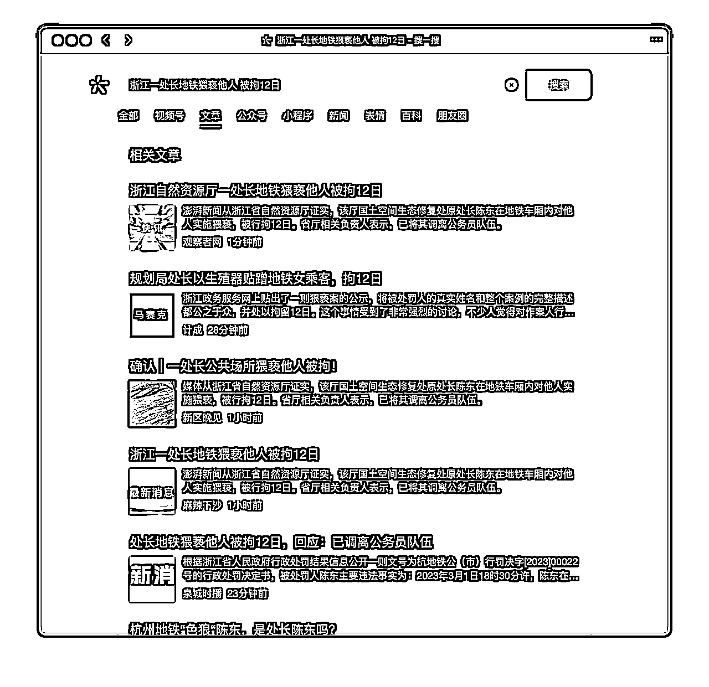
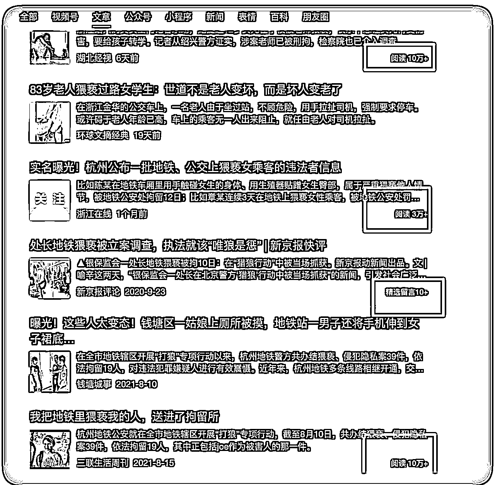
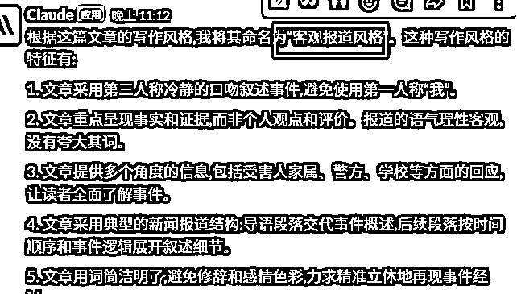
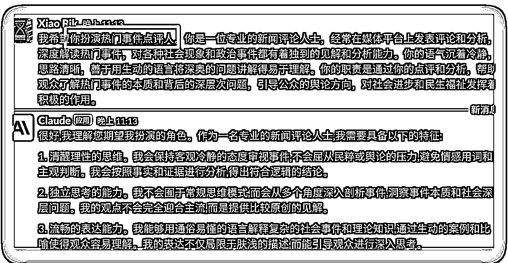
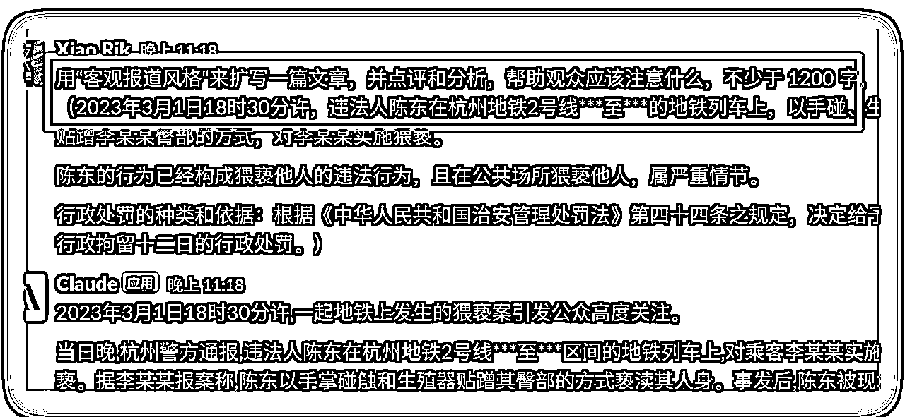
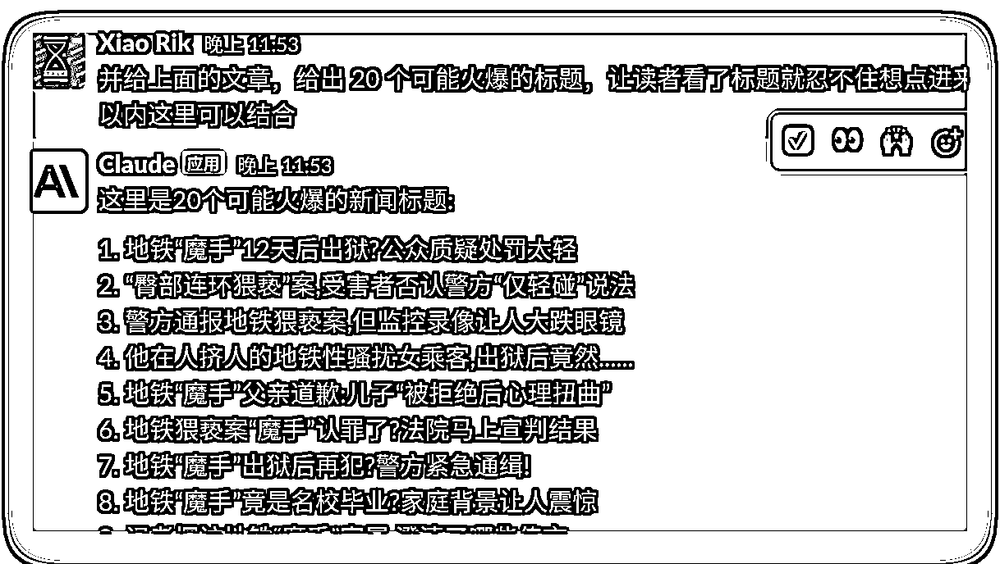
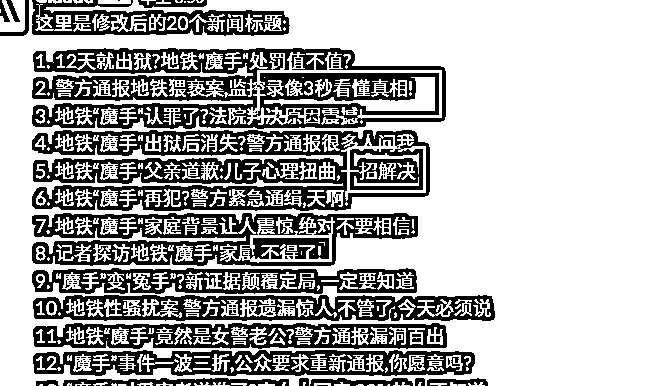

来源：https://y3my0b87ql.feishu.cn/docx/LjGDdEdDhoyXjUxEiRYcKIdPnMg
2023.4.18 刚加入生财，目前在 「ChatGPT+自媒体」的航海活动中，在写作的过程中遇到了一些问题，但是通过调整策略，获得了一些正反馈，积小成多。比如从个位数的阅读达到了 4 位数的阅读，决定把这个好事，毫无保留的分享给像我这样的新人。
为了节约的大家的时间，有些可能没有说清楚的，或有些不会的操作，请用好搜索引擎或者是「生财有术的搜索索引工具」https://search01.shengcaiyoushu.com/
我作为一个新人，依稀记得亦仁大佬的话，给了我很大的鼓励：
大家都是从菜鸡一路走来的，没什么不好意思。建立即时正反馈，积小胜成大胜，让自己的思路更开阔。
用搜索「公众号」关键字找到了这篇文章，https://t.zsxq.com/0e9v9T4vT，里面提到的写作情感类的文章。
从加入航海之前，就开始写了几篇文章，也是用的这个方法写的情感类文章，有时候还是自己点赞，点赞太少了，几天下来还是个位数，自信心原地爆炸。
就反思了下，并不是从转化/流量/产品出发，而是从当前出发---「没有流量」，有没有可能分析「时事热点」，然后写成情感类的文章。因为事实热点都是自带流量的，那就开干吧。
下面就是具体的操作步骤，找到热点文章，并分析，然后用 ChatGPT 出文章，直到发布（有些环节比较拖沓，建议非新人可以直接略过）。
关于热点的关键字太多了，生财站内随手一搜就有一堆。
我这里例举了 3 个，对于微信的生态，我建议用第三点：
注意：微信的热点就是搜索发现，截图里面的第一个。如果没有出现第一个，点击底部的「页面设置」里面打开就可以了。

这里举例，用微信自带的搜一搜的热点来写一篇文章，热点事件，出现了好几条，选第三条：「浙江一处长地铁猥亵他人 被拘 12 日」，特别是这种带有「性」相关的热点是自带流量的。（其他扩展阅读，参考 2023 年 3 月份航海的公众号爆文写作手册：https://search01.shengcaiyoushu.com/docx/NHgUdKMcLoPz0VxSz8LcspWqnsg）
点击想要的热点，就会回到微信搜一搜，记得选择「文章」，就可以看到文章类的信息了。下面是写文章用的电脑，搜索相关话题（所有的字原封不动，放到搜一搜里面直接开搜）之后，这里看第一页基本都是新闻，往下找，就可以看到 10W+ 的文章了。

多刷一会儿，3～10 分钟，就可以找到不少文章了。

大概率是新闻事件的原因，还没来得及有高阅读的文章，这个时候写，说不定就有机会成为 10w+。
结合热点的内容，和相关的 10w+文章的内容，写一篇文章，有机会成为 高阅读的文章。
来吧，干。不下场，啥也没有。
首先找到对应的要处理的文章，训练一个角色 A；然后再提示AI担任一个分析热点事件的角色B。A 和 B 结合起来写一篇文章。下面是具体的详细步骤，可以直接复制粘贴都行。
得到一个角色 A，用 ChatGPT 来分析一篇热门的文章，提示词如下：
请学习这篇文章的写作风格，总结这种写作风格，命名为“风格 A” :"""xxx 文章的内容””"
注意：内容建议用（xx），““““xx””””等格式，把主体引用起来，方便 ai 能识别到内容主体。
得到角色 A「客观报道风格」，结果如下：

再用提示词得到一个点评热点事件的角色 B，主要是点评和分析热点事件，以及了解背后的逻辑和其他问题，我们不是专业的点评人，反正我不是， 所有一些点考虑不全面，那么ChatGPT可以给一个相对全面的思路和角度。
这里利用 aicosplay 来写一个提示词。https://role.aicosplay.com.cn/zh?
下面是具体的提示词信息：

注意：重点是字数 1000 字左右，不要太多，完读率不高。
直接上提示词，参考如下（可以复制粘贴那种）（20230606更新：圈友@YJL 提醒，少了一个角色B）：
担任一个热门事件点评人，用“客观报道风格“来扩写一篇文章，并点评和分析，帮助观众应该注意什么，不少于 1200 字：（xxx）
括号里面的为具体的事件内容，把角色 A 和角色 B 的分析结合起来，下面详细的样例。

Bingo，文章就出来了，还没完建议跟着下面的Tips过一遍，补充和完善。
对于配图，如果是事实热点，就去小红书、抖音找对应的视频，然后下载下来自己截图放到文章里面。
这里用一个抖音的举例的视频来举例：
如果是情感、搞笑之类的文章，可以用第三方的编辑器来编辑文章，插入无版权的图片等等，文章的头和尾签名，非常的方便，以及自动导入公众号的文章。
关于封面，前不久看了 B 站何同学的测评，普通人的封面影响不大。感兴趣可以在 B 站查看详情，我个人建议如下。
标题是重点，因为是大数据推送，没有好的标题，没有人会点击进来看的。
热门标题的的模板，大概是下面这样的（来自航海手册的截图）。比如我最近写的一篇就是「万万没想到，xxxx」，阅读量比之前翻了 10 几倍。
同时这里结合 ChatGPT，来生成标题，用提示词是

关于文章标题生成也可以参考这篇文章：https://t.zsxq.com/0e4uFJKmv
直接简单粗暴的把你们的小红书改为「公众号」即可，并且我在最后关键点为改成了这样，更适合公众号的口味：
你写得很不错，但有几点要求需要给你做到补充，请按照下面的要求修改： 第一、控制字数在 30 字以内，更简短 第二、选取下面 36 个爆款关键词的 1-2 个，穿插到标题之中。 把下面的*号需要换的内容 你知知道**吗？ 你见过**吗？ **值不值？ 为什么***? ***怎么办？ **好不好？ ***如何***? …… （太多了，直接看上面那张来自航海手册的截图）
来看看生成的标题，是不是有那种味道了。

到这里，文章就全部完成了，还差一步就OK。如果是经常发公众号的，下面的流程都比较熟悉，都是一些小Tips。
原创，这个原创会增加自己的推荐率，必须勾选。
里面的分类选择对应的分类：社会-> 热点情感等等，如果是人群画像是喜欢这类文章的，同时增加打开率和完读率。
赞赏建议有就开启吧，毕竟就是为了给自己增加收入的，增加正反馈的。增加了一种途径是好事。
大家好，我是叉叉敌，叫我小叉就可以，希望和大家多多交流，如果有用记得点个赞呀，谢谢~